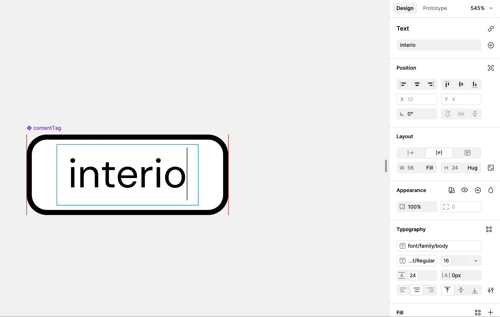
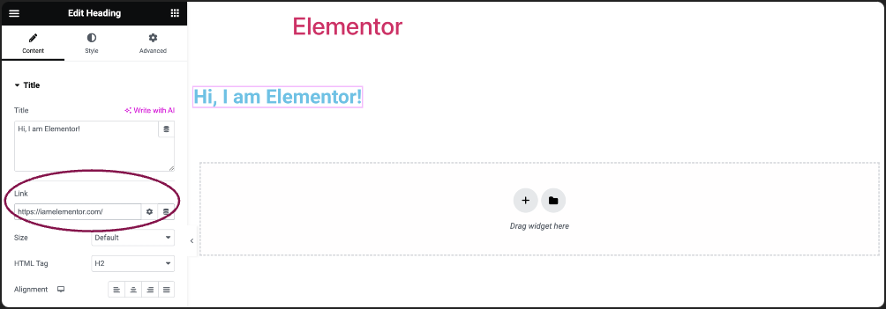
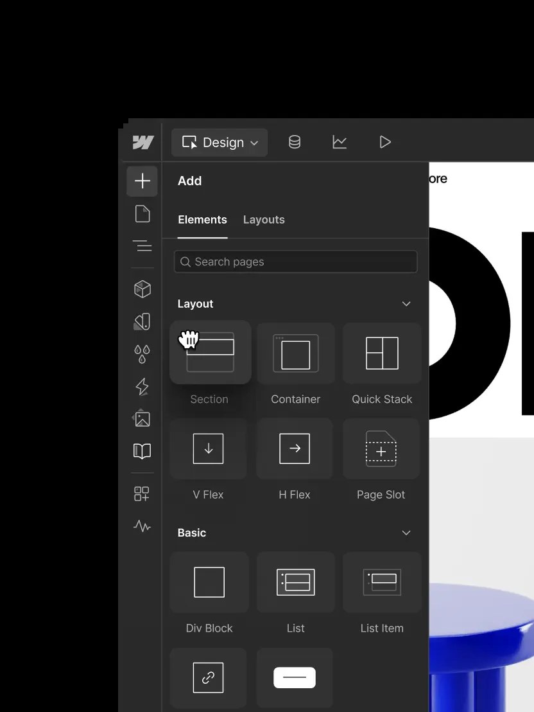

Gate 1: اتجاه تصميم المحرّر
Harlow theme: الشريط الجانبي (Styles)، إضافة عنصر جديد (مشروع، خبر…)، تصميم الكروت، والروابط. البراف نوعه Defined، يعني اتجاه واحد مع تبريره.
١. الوضع الحالي (صور من المحرّر عندنا)


٢. المراجع (صور حقيقية من البرامج نفسها)



المصادر: Figma Help وElementor Help وصفحة Webflow Design انفتحوا فعلاً. صفحات Webflow Help Center وقّفتهم Cloudflare، وصفحات Elementor Help الأحدث صارت تحوّل عالصفحة الرئيسية، فما استعملتهم.
٣. الاتجاه المقترح: Property panel (متل Figma وElementor، فاتح ومنسجم مع ووردبريس)
| المنطقة | شو بيتغيّر | مأخوذ من |
|---|---|---|
| رأس اللوحة | اسم العنصر مع أيقونته، وتحته شريط الأجهزة (Desktop / Tablet / Mobile) كأيقونات، وبيضل ثابت فوق وقت تنزلي. وفي تبويبين: Style وAdvanced (الحركة والشروط والـ CSS والخصائص المتقدمة). | Elementor Figma |
| الصفوف | الاسم عاليسار (قصير، بلا أحرف كبيرة) والتحكّم عاليمين بصف واحد. الأرقام بحقل واحد والوحدة جوّاتو (16 px). صفّين بكل سطر للأشياء المتقابلة (W / H، Top / Bottom). | Figma |
| الأزرار | المحاذاة والاتجاه وحالة الأحرف والخط تحت الكلمة كأيقونات (segmented)، مش كلمات. | Figma Elementor |
| الألوان | مربع لون صغير مع الكود جنبه بنفس الصف، والضغط عليه بيفتح ألوان البراند وبعدين الـ palette. | Figma |
| المجموعات | كل مجموعة إلها أيقونة، وبيبيّن جنبها نقطة لما يكون فيها تعديل، مع زر Reset لكل صف ولكل مجموعة. مجموعات العنصر نفسه أول، وبعدين "The box around the element". | Webflow Figma |
| مشروع أو خبر جديد | بالشريط الجانبي بتطلع لوحة "Project details" أول شي (الصورة، الوصف، السنة، الصور). وبالمكان الفاضي بيطلع شرح قصير بيقول شو بيروح وين. والحقول ما عادت مخبّاية تحت. | Webflow CMS |
| تصميم الكروت | من قائمة العناصر (الـ list) تحت Styles بتطلع مجموعات للكرت: الصندوق، الصورة، العنوان، النص، التاريخ، الرابط. وبالمشروع والخبر في زر "Card design" بيوديكي لقائمة فيها كروته. والكرت بيضل نفس تصميم الموقع لحد ما تغيّري فيه. | Elementor Loop Grid |
| الروابط | لما تحدّدي كلام وتضغطي Link، بتطلع نافذة فيها خيارين واضحين: "Page of the site" (قائمة بكل الصفحات والمشاريع والأخبار مع بحث) و"Custom URL"، ومعهم خيار "Open in a new tab". | Elementor Webflow |
ليش هالاتجاه
- بيضل ضمن ووردبريس (نفس الخطوط والعناصر)، فبيضل يشتغل مع تحديثات ووردبريس، بس ترتيبه وكثافته متل Figma وElementor.
- صف واحد لكل خاصية بيخلّي الشريط أقصر بالنص تقريباً، فبتشوفي المجموعة كلها بلا ما تنزلي كتير.
- النقطة جنب المجموعة المعدّلة بتخليكي تعرفي فوراً شو غيّرتي على كل جهاز.
شو ما رح يتغيّر
- القيم والـ CSS يلي بتطلع على الصفحة نفسها، يعني كل يلي عدّلتيه بيضل متل ما هو.
- تصميم الموقع: الكروت بتضل متطابقة مع الموقع الأصلي لحد ما تعدّلي فيها إنتي.
بعد موافقتك (Gate 2)
ببني الشريط الجانبي الجديد للعنوان (Heading) بالمحرّر الحقيقي، وببعتلك صورته قبل ما عمّمه على كل العناصر.